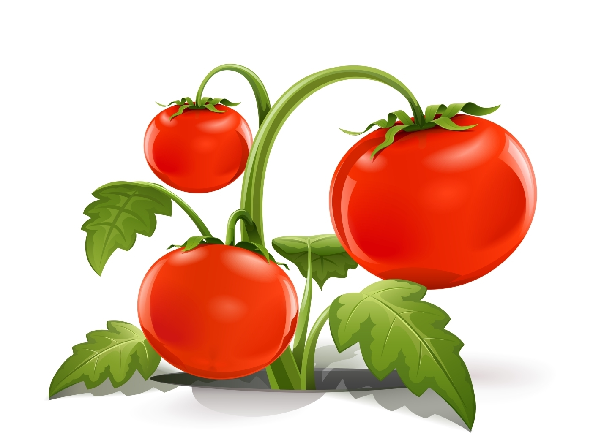

Tomato Disease Prediction
This intelligent system leverages deep learning to help farmers and gardeners quickly identify tomato leaf diseases with just an image. Our mission is to promote healthier crops and sustainable farming through AI innovation.

About the Project
Our deep learning model is trained using a comprehensive tomato leaf dataset. It utilizes Convolutional Neural Networks (CNNs) on resized and augmented images to enable high-accuracy classification of common tomato diseases and healthy leaves.
AI-Powered Detection
Utilizes deep learning to automatically detect tomato leaf diseases from uploaded images with speed and accuracy.
Rich Dataset & CNN
Trained on thousands of images collected from trusted agricultural datasets for robust, high-performance classification.
Sustainable Farming
Designed to assist farmers and home gardeners in maintaining healthy tomato crops, reducing pesticide use.
Prevent Plant Disease: Steps to Follow
- Follow Good Sanitation Practices.
- Fertilize to Keep Your Plants Healthy.
- Inspect Plants Before You Bring Them Home.
- Allow the Soil to Warm Before Planting.
- Rotate Crops for a Healthy Vegetable Garden.
- Provide Good Air Circulation.
- Remove Diseased Stems and Foliage promptly.
Why is it Necessary to Detect Disease?
Accurate diagnosis is the most important aspect of plant pathology. Without proper identification of the disease and the causal agent, control measures are often ineffective, wasting resources and leading to further crop losses. This system provides the transparency needed to detect diseases early, often before symptoms are clearly visible, ensuring timely and effective intervention.
Technology Stack
- TensorFlow
- Keras
- OpenCV
- Flask
- Bootstrap 5
The core detection model is powered by modern deep learning frameworks: TensorFlow and Keras, with image preprocessing handled by OpenCV. The responsive web interface is built using Flask (Python) and the mobile-first framework Bootstrap 5. This combination ensures a reliable, fast, and scalable system for real-time predictions.
Connect With Me
Feel free to reach out for collaboration, suggestions, or queries.